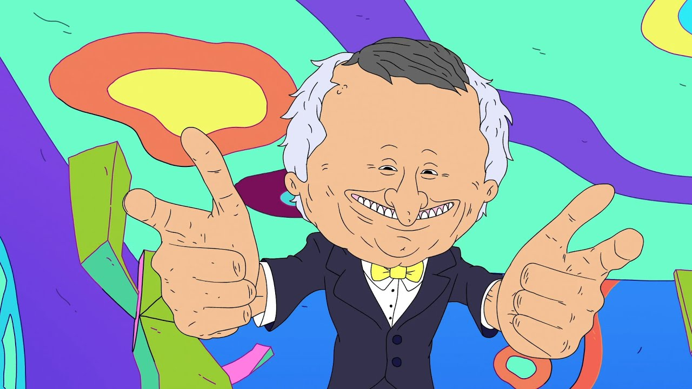

Mr.boss
Smiling Friends foi transmitido em 1 de abril de 2020, durante o Dia da Mentira do Adult Swim. A primeira temporada estreou em 10 de janeiro de 2022.

Mr.boss é um personagem de Smiling Friends, é uma série de animação para adultos criada por Zach Hadel e Michael Cusack para o bloco noturno do canal por assinatura Cartoon Network, que gira em torno de uma pequena instituição de caridade dedicada a fazer as pessoas sorrirem.